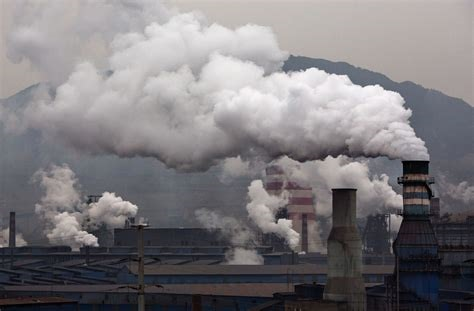

Climate Change
What is affecting climate change?
 While we burning coals, oil and gases, we are changing the climate due to cutting trees and emit green houses gas.
Because of the huge amount of gases stored in the atmosphere, causing global warming.
Green house gases
- carbon dioxide
- methane
- nitrous dioxide
- fluorinated gases
Causes of rising emissions
- Because of burning a huge amount of coal, oil and gases which produce carbon dioxide and nitro dioxide
- Cutting down too much trees, as known as deforestation. Trees can do photosynthises to transfer carbon dioxide into oxygen.
- Development of farmlands also bringing destruction to the environment. Cows and sheeps create a lot of methane when they fart.
The consequences of climate change
As one of the problem global warming is being more harmful. According to current data, the year 2011 to 2020 was the warmest decade recorded. The temperature rised 1.1 degree celcius which above the pre-industrial level in 2019. The causes of over-developing leads to increasing at a rate of 0.2 degree celcius per decade.
Climate changes rapidly from few years ago. Drought poison farmlands and rivers, flooding spreads disease and damges to ecosystems and architecture.

What can we do more?
- Start use energy wisely. Not only become more energy-efficent, you can save money too!
- Ride bike for bike lanes in your community, also helps make you healither and happier.